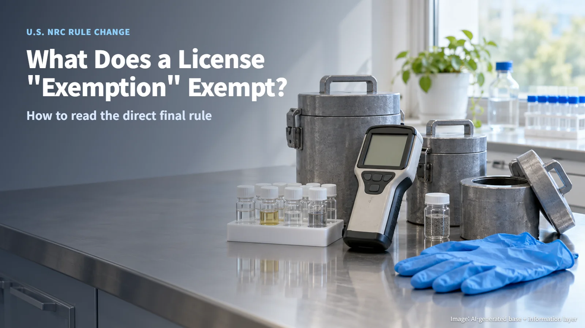
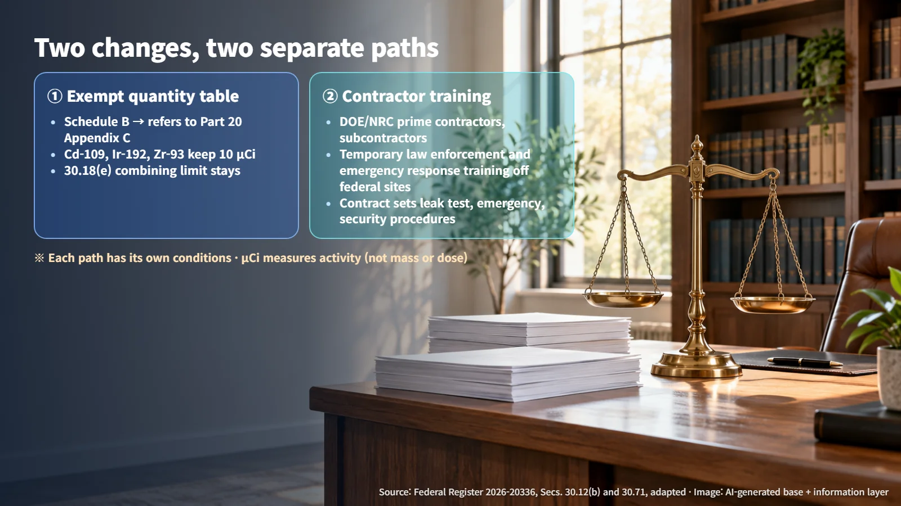
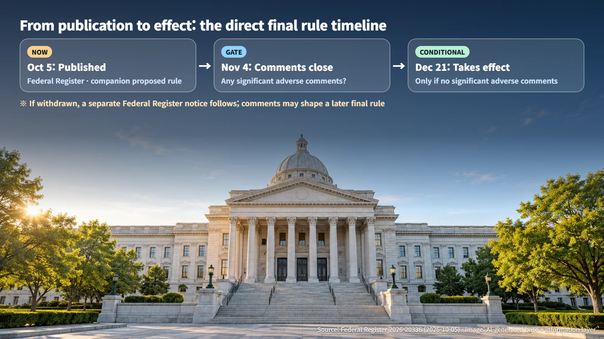
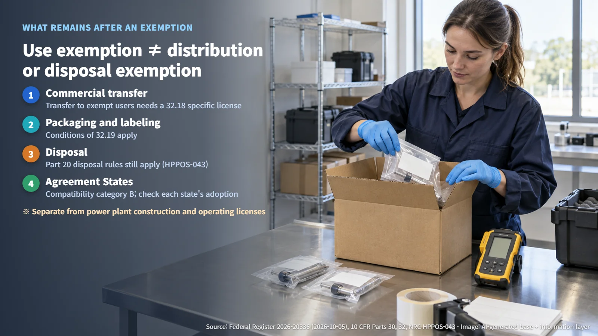

United States · Materials Licensing
What Does a Radioactive Materials License "Exemption" Actually Exempt? Reading the NRC's Direct Final Rule
The NRC's direct final rule revises the exempt quantity table and adds a temporary training exemption for contractors, with obligations for distribution, packaging and disposal still in place.
News that "radioactive materials rules are being relaxed" can sound as if a layer of radiation protection is being peeled away. It is natural to wonder whether an exemption means anyone may now handle these materials as they please.
On October 5, 2026, the U.S. Nuclear Regulatory Commission (NRC) published a direct final rule on materials license exemptions in the Federal Register. The rule has two parts, and each part follows its own path. Let us walk through what changes, what stays in place, and when the new text could take effect.

What Is a License Exemption?
As a rule, handling radioactive material requires a license from the regulator. A license exemption is a conditional exception to that rule. It applies only when every condition is met: a specified material, a specified quantity, and a specified user and activity. Within those limits, a separate licensing procedure is unnecessary.
Home renovation offers a useful comparison. Depending on the type and scale of the work, some projects need a permit and others do not, yet the safety rules on the job site apply in both cases. A license exemption works the same way: it draws a line around the range in which the paperwork of a license can be skipped, while the safety rules keep applying.
Change One: How the Exempt Quantity Table Is Set
Under Title 10 of the U.S. Code of Federal Regulations (10 CFR), section 30.18(a) exempts byproduct material (material made radioactive in the course of producing or using nuclear material, among other processes) from licensing requirements when each individual quantity is at or below the values listed in a table called Schedule B. Until now, that table (section 30.71) was a separate list of radionuclides. The new rule changes it so that Schedule B refers to Appendix C of Part 20, the radiation protection regulations.
The unit for these quantities is the microcurie (µCi). It measures activity, meaning how actively a material emits radiation. Mass and the radiation dose a person receives are measured with other units.
The rule also carries exceptions. Cd-109, Ir-192 and Zr-93 keep 10 µCi instead of the 1 µCi in Appendix C, and other non-alpha-emitting materials keep 0.1 µCi wherever the Appendix C value is below 0.1 µCi. These provisions let existing exempt users keep their exemption under the new reference table. Section 30.18(e), which restricts combining materials to increase radiation levels, remains in force, so each exempt quantity still has to stand on its own. The NRC cited evaluations in NUREG-1717, among other analyses, as the basis for the revision.
Change Two: Exemptions for Contractors' "Temporary Training"
Revised section 30.12(b) covers prime contractors and subcontractors of the U.S. Department of Energy (DOE) or the NRC that temporarily conduct certain law enforcement and emergency response training away from federal sites. They must meet the conditions in the provision, such as spelling out leak testing, operating, emergency and security procedures in the contract. The exemption covers these defined training activities; other possession and manufacturing work by DOE-related suppliers stays under the usual licensing requirements.
Separate quantity conditions apply. For example, sealed Ir-192 must be less than 150 Ci. Source material (section 40.11) and special nuclear material (section 70.11) carry their own quantity conditions as well. The provisions distinguish between "less than" (the boundary value excluded) and "does not exceed" (the boundary value included), so a single number can decide whether an exemption applies. It is also worth remembering that this path runs separately from the quantity table in Change One.

How a "Direct Final Rule" Takes Effect
The Federal Register document number for this notice is 2026-20336. A direct final rule is published in its final form first, and whether it takes effect depends on the comments received. This rule is scheduled to take effect on December 21 if no significant adverse comments are received by November 4. If such comments arrive, the NRC will withdraw the rule and publish a separate notice in the Federal Register.
Through a companion proposed rule, the NRC can also reflect comments in a later final rule. The rule is therefore at the published stage, with the effective date still ahead. As of October 8, the current requirements remain the ones to apply, and the new values become usable once the rule takes effect.

What Remains After an Exemption
The most important point is where an exemption ends. Even when an end user qualifies for a quantity exemption, commercially producing, packaging, repackaging or distributing that material stays under licensing. A business that commercially transfers material to exempt users needs a specific license under section 32.18, and packaging and labeling must meet the conditions in section 32.19. The NRC interpretation document HPPOS-043 explains that the Part 20 disposal requirements for previously licensed material continue to apply even when the quantity is at or below Schedule B. Small-quantity exemptions and disposal obligations operate on separate tracks.

In the United States, Agreement States have signed agreements with the NRC and regulate certain radioactive materials themselves. The NRC assigned these provisions to compatibility category B, which means Agreement States must adopt essentially identical rules. Each state updates its regulations on its own schedule, so the state-by-state adoption status needs to be checked separately from the NRC effective date. The revision also sits entirely outside the construction and operating licenses for nuclear power plants.
The word "exemption" sounds broad, yet a closer look reveals tightly drawn conditions: the radionuclide and its quantity, the user and the activity, and the conditions for taking effect. When a regulatory headline appears, asking "what, under which conditions, and from when" turns vague unease into clear understanding.